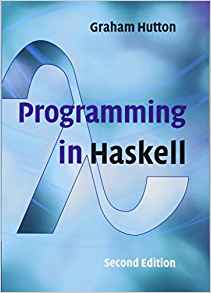
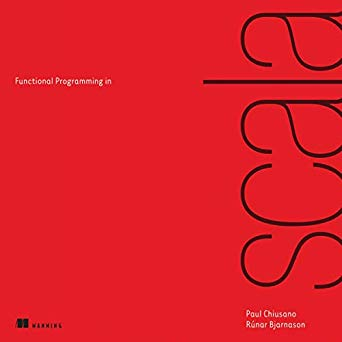
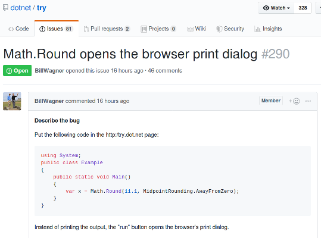

Created: 2019-07-10 Wed 16:30
It's a bit hard to define, but let's give it a go.

"functional programming can be viewed as a style of programming in which the basic method of computation is the application of functions to arguments."
– Graham Hutton
There must be more to the story than that . . .
"Functional programming is a programming paradigm […] that treats computation as the evaluation of mathematical functions and avoids changing-state and mutable data."
– Wikipedia
"Programming where your entire program is a single referentially transparent expression composed of other referentially transparent expressions."
– Rúnar Bjarnason

setTimeout(function() {
console.log("hello");
}, 3000);
undefinedhello
var greeter = function(greeting) {
return function(name) {
console.log(greeting + ", " + name);
};
}
var helloGreeter = greeter("Hello")
helloGreeter("FP fans!")
Hello, FP fans! undefined
// PHP
function map(callable $f, array $l) {
$result = [];
foreach ($l as $v) {
$result[] = $f($v);
}
return $result;
}
$inc = function($i) {
return $i + 1;
};
map($inc, [1, 2, 3]);
// [2, 3, 4]
These features give the following benefits:
"purely functional programming usually designates a programming paradigm […] that treats all computation as the evaluation of mathematical functions. Purely functional programming may also be defined by forbidding changing-state and mutable data."
– Wikipedia
# Python
chars = ['a', 'b', 'c']
upper_chars = []
for c in chars:
upper_chars.append(c.upper())
return upper_chars
['A', 'B', 'C']
# Python
chars = ['a', 'b', 'c']
upper_chars = [c.upper() for c in chars]
return upper_chars
['A', 'B', 'C']
In imperative languages, if / else is a statement:
// Java
String msg = "";
if (isMoving) {
msg = "We're moving!";
} else {
msg = "We're stopped.";
}
In functional languages, it's an expression.
// Scala
val msg: String = if (isMoving)
"We're moving!"
else "We're stopped."
// Python
in1 = read("some-file.txt")
write("some-file.txt", in1 + "new stuff.")
in2 = read("some-file.txt")
-- Haskell
doIt = do
in1 <- readFile("some-file.txt")
writeFile("some-file.txt", in1 ++ "new stuff.")
in2 <- readFile("some-file.txt")
return in2
-- Haskell
readSomeFile = readFile("some-file.txt")
doIt = do
in1 <- readSomeFile
writeFile("some-file.txt", in1 ++ "new stuff.")
in2 <- readSomeFile
return in2
Whole classes of bugs become impossible. 
"it's worth mentioning that Semantic, as a rule, does not encounter runtime crashes"
"null pointer exceptions, missing-method exceptions, and invalid casts are entirely obviated, as Haskell makes it nigh-impossible to build programs that contain such bugs."
"the fact that the Semantic Code team spends the majority of its time working on features rather than debugging production crashes is truly remarkable—and this can largely be attributed to our choice of language."
for loops